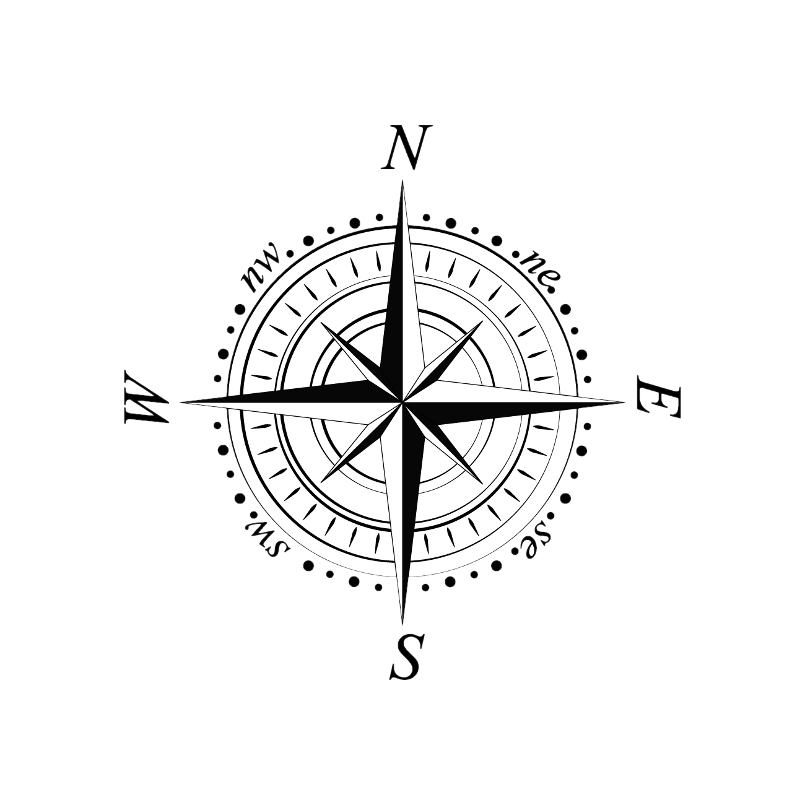

This page requires location and device orientation information. After clicking the button you will likely be prompted to provide permission.
Activate!
Hello there!

Compass Image by evasplace
on Freepik